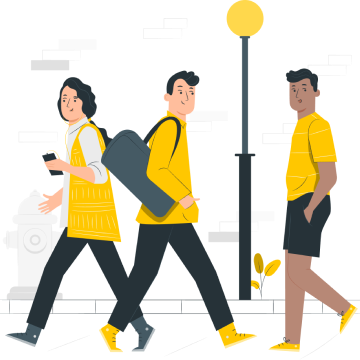

Guard Mode
One tap. Protected until you say stop.
Tap the shield and Koyantaw starts watching in the background. Your contacts hear that you're protected, and they're alerted only if something looks wrong.
- Private by default. Your contacts never see where you are, even during an alert.
- Crash detection. A sudden stop at speed alerts your saved contacts automatically.
- Stays on. Protection runs until you turn it off, not when you close the app.
